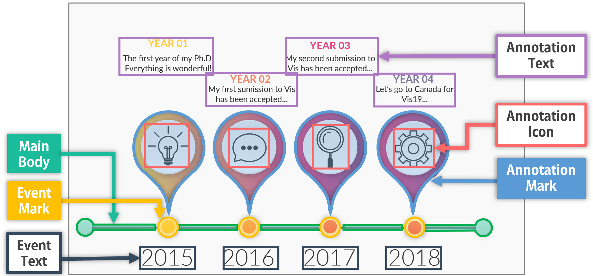
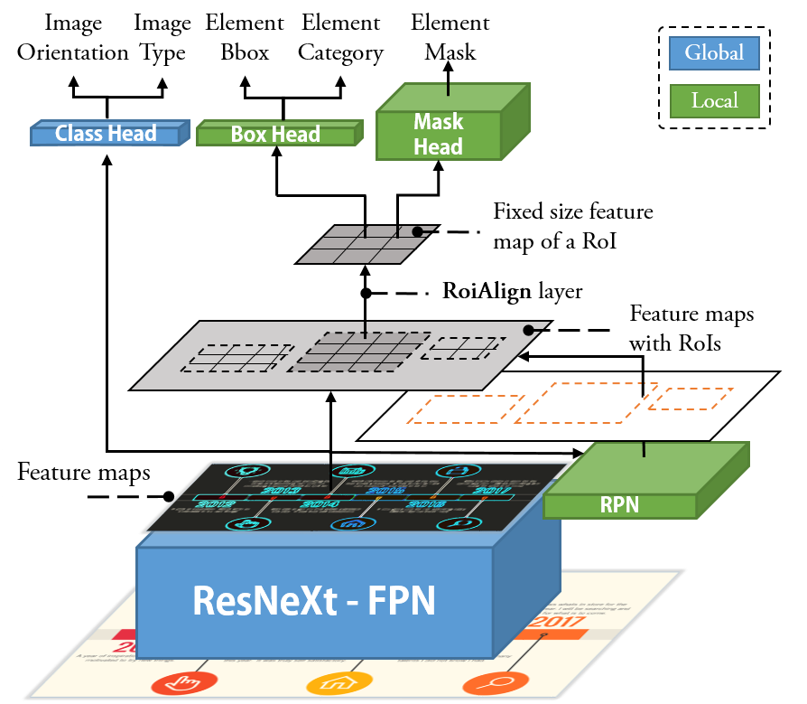

Designers need to consider not only perceptual effectiveness but also visual styles when creating an infographic. This process can be difficult and time consuming for professional designers, not to mention non-expert users, leading to the demands of automated infographics design. As a first step, we focus on timeline infographics, which have been widely used for centuries. We contribute an end-to-end approach that automatically extracts an extensible and extendable timeline template from a bitmap image. Our approach adopts a deconstruction and reconstruction paradigm. At the deconstruction stage, we propose a multi-task deep neural network that simultaneously parses two kinds of information from a bitmap timeline: 1) the global information, which includes the representation, scale, layout, and orientation of the timeline, and 2) the local information, which includes the location, category, and pixels of each visual element on the timeline. At the reconstruction stage, we propose a pipeline with three techniques, i.e., Non-Maximum Merging, Redundancy Recover, and DL GrabCut, to extract an extensible template from the infographic, by utilizing the deconstruction results. To evaluate the effectiveness of our approach, we synthesize a timeline dataset (4296 images) and collect a real-world timeline dataset (393 images) from the Internet. We first report quantitative evaluation results of our approach over the two datasets. Then, we present examples of automatically extracted templates and timelines automatically generated based on
these templates to qualitatively demonstrate the performance. The results confirm that our approach can effectively extract extensible templates from real-world timeline infographics.
Labels of elements

Categories of elements in a timeline infographic. The event mark, annotation mark,
and main body can be reused, while others need to be updated.
To identify the categories of elements in a timeline,
four of the coauthors independently reviewed all the timelines in our two datasets.
Each of them iteratively summarized a set of
mutually exclusive categories that can be used to depict elements in a timeline infographic.
Gathering the reviews resulted in six categories:
Category
Explaination
Label type
Occurrence
Architecture

The above figure presents an overview of the complete architecture of our model that can parse both global and local information simultaneously.
We further present the details of ResNeXt-FPN,
Class Head,
RPN,
Box Head, and
Mask Head, respectively.

{kind=link}